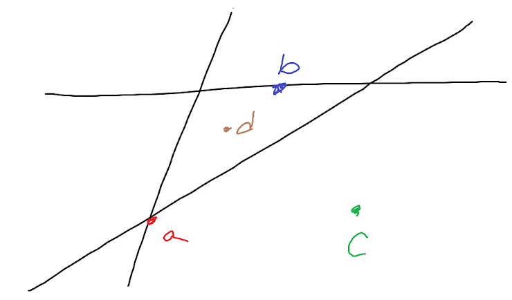

Based on content taught by JinCheng Wang in Spring 2021.
You are currently in test mode. To switch to learn mode, click here.
1. It is impossible for a system of linear equations to have _____ solutions.
2. Let \(\textbf{v}_1 = (1, 0, 0)\), \(\textbf{v}_2 = (0, 1, 0)\), and \(\textbf{v}_3 = (7, 3, 0)\). All vectors in \(Span\{\textbf{v}_1, \textbf{v}_2, \textbf{v}_3\}\) make up...
3. Let \(A\) be an \(m \times n\) matrix. What is a necessary condition for the columns of \(A\) to span \(\mathbb{R}^m\)?
4. A transformation from \(\mathbb{R}^n\) to \(\mathbb{R}^m\) is linear iff for any \(u, v\) in \(\mathbb{R}^n\) and any scalar \(c\)...
5. Let \(T\) be a linear transformation from \(\mathbb{R}^n\) to \(\mathbb{R}^m\) and let \(A\) be the standard matrix for \(T\). \(T\) is one-to-one iff...
6. All of the following are always true for matrices \(A\), \(B\), and \(C\) EXCEPT...
Assume that \(A\), \(B\), and \(C\) have sizes where all operations in the answer options are defined.
7. Let \(A\) be an \(m \times n\) matrix. All of the following are logically equivalent to "\(A\) is invertible" EXCEPT...
8. Let \(A\) be a \(3 \times 3\) matrix. Suppose that \(det(A) = 5\). What is \(det(2A)\)?
9. Let \(A\) be a matrix. What is \(Nul(A)\)?
10. Let \(P_n\) be a vector space containing all polynomials with degree less than or equal to \(n\). Which of the following is true?
11. Let \(A\) be an \(n \times n\) matrix and let \(2\) be an eigenvalue of \(A\). What is the set of all eigenvectors corresponding to this eigenvalue?
12. What does it mean for a matrix \(A\) to be diagonalizable?
13. Two vectors are orthogonal iff...
14. What is the orthogonal complement of \(Nul(A)\)?
15. The three lines in the diagram below correspond to three linear equations on a 2-D plane. Which point represents a least squares solution of the system of those three linear equations?
